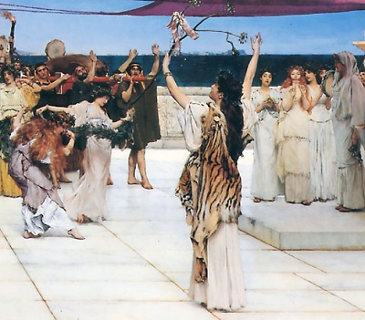

|

A Dedication to Bacchus, Alma-Tadema Laurence [1889] (Public Domain Image) |
The Roman and Greek Questionsby Plutarch, tr. Frank Cole Babbitt[1938] |
These are the Roman and Greek Questions of Plutarch, extracted from Babbitt's Loeb Classics translation of the Moralia. Plutarch, who was an initiated priest of Apollo of Delphi, here attempts to shed light on numerous ancient folklore enigmas. Some of these are apparently survivals from the distant past, and very signficant for the study of the evolution of classical paganism. This was one of the first attempts to explain folklore in both rational and mythopoetic terms, as well as a treasure trove of ancient lore which makes fascinating reading.
Title Page
The Roman Questions
Introduction1-9.
10-19.
20-29.
30-39.
40-49.
50-59.
60-69.
70-79.
80-89.
90-99.
100-109.
110-113.
The Greek Questions
Introduction1-9.
10-19.
20-29.
30-39.
40-49.
50-59.